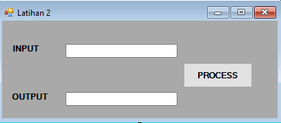
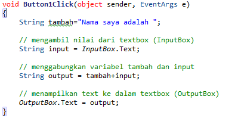
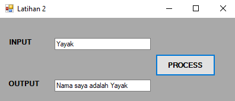
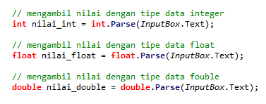

Setelah pada pertemuan sebelumnya kita telah mempelajari tentang cara Menampilkan tulisan di dalam textbox, pada bab ini akan dijelaskan bagaimana caranya agar kita bisa mengambil nilai dari suatu textbox. Contohnya seperti saat kita membuat aplikasi pendaftaran, tentunya kita harus menyimpan apa yang di inputkan oleh user ke dalam sebuah variabel agar data yang di inputkan tadi bisa diolah sesuai kebutuhan seperti dimasukkan ke dalam database atau yang lainnya.
Baik selanjutnya mari kita coba buat project baru di SharpDevelop dengan nama latihan 2. Untuk yang belum paham cara membuat project di SharpDevelop silahkan baca materi yang sudah diajarkan sebelumnya di Pengenalan IDE SharpDevelop.
Langkah pertama adalah buat form seperti di bawah ini
Kemudian double klik button dan akan masuk ke bagian coding, setelah itu coba isi fungsi button dengan coding dibawah ini
Penjelasan
Pertama kita buat variabel String tambah yang berisi Nama saya adalah
Kemudian buat variabel String input untuk menerima inputan dari textbox. Untuk inputbox adalah nama variabel dari textbox silahkan ubah di properties
Yang selanjutnya kita buat variabel baru yaitu String output untuk menggabungkan variabel tambah dan juga input
Kemudian yang terakhir adalah menampilkan apa yang telah kita inputkan tadi kedalam textbox. Outputbox merupakan nama variabel dari textbox yang akan digunakan untuk menampilkan data
Setelah selesai coba run dan isikan sebuah nama didalam texbox input kemudian klik proses, apabila coding benar akan menjadi aplikasi seperti dibawah ini
Cara diatas hanya bisa digunakan untuk tipe data String, untuk tipe data Integer,Float dan Double kita perlu mengconvert terlebih dahulu tipe data nya dari string ke tipe data yang diinginkan. Contohnya seperti dibawah ini
Jadi setelah membuat variabel kita tuliskan lagi tipe datanya, kemudian tambahkan .Parse dibelakangnya yang berfungsi untuk mengubah inputan dari Inputbox.Text yang awalnya bertipe data String diubah ke dalam Integer,Float atau Double.
Made by ♥ yayakyogi - Pemograman Dekstop